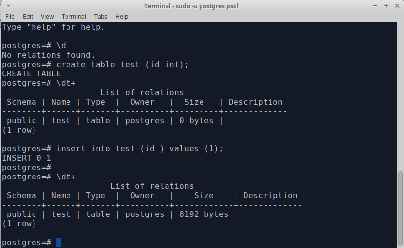
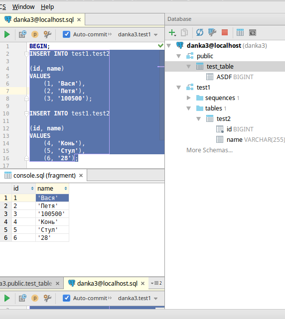
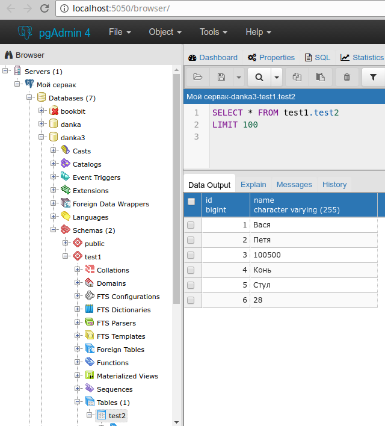
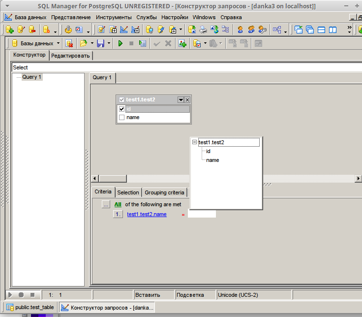
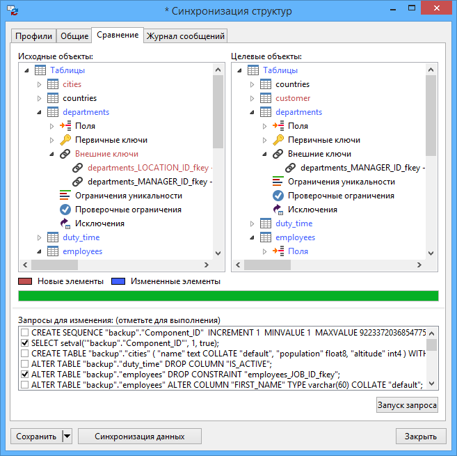

Я поспрашивал различных людей, имеющих отношение к PostgreSQL, что они используют в реальной жизни для разработки приложений, использующих PG.
Это, конечно, не строго математическая выборка, но тем не менее получился некоторый список инструментов на слуху, которые достойны того, чтобы их "пощупать", что я и собираюсь сделать в этой статье.
Если вашего инструмента нет в списке, или у вас просто есть что сказать, добро пожаловать в комментарии.
Итак, вот неформальный топ и субъективное описание.
psql

На первом месте psql, и это неудивительно. Надежный как автомат калашникова, бесплатный, стоит из коробки, что еще надо для счастья? Для редактирования запросов используется редактор, указанный в переменной окружения EDITOR, обычно ставят vim, nano или что-то в этом духе. Ну и вообще, psql — это unix-way, т.е. можно его запускать со своим редактором, своим пейджером для отображения результатов, ему можно на вход подавать sql-запрос через пайп, и вывод направлять куда надо.
Из минусов можно отметить слабенький автокомплит, а также то, что приходится заучивать неинтуитивные команды из серии \d \dt+ \sf и т.д. (впрочем, все описания команд доступны через команду \?)
Ну, и работа в консоли и в виме — это не всех устраивает почему-то :)
На самом деле, иногда хочется иметь где-нибудь слева полный список таблиц/вьюх и иметь возможность щелкнуть мышкой по нужной, чтобы посмотреть, что там вообще. Т.е. хоть какой-то GUI. Работа в psql хоть и эффективна, но напоминает работу в темной комнате с маленьким фонариком, освещающим лишь только один объект за раз.
datagrip

IDE для баз. Несмотря на то, что продукт относительно свежий, он уже используется повсеместно. В основном за счет того, что сразу встроен в мегапопулярные продукты от компании JetBrains: IntelliJ IDEA, PyCharm, PhpStorm и т.д.
Собственно, эта его встроенность одновременно является и главной киллер-фичей продукта: вы редактируете, например, php-код, в котором есть строка с sql-запросом, и внезапно понимаете, что IDE вам подсказывает (прямо в вашем коде) синтаксис SQL, названия таблиц и их полей, подчеркивает красненьким, если что-то написано не так, форматирует SQL и многое-многое другое. Конечно, в этом же IDE можно делать и то, что умеют другие GUI для баз: просматривать списки таблиц и других сущностей, отдельно делать запросы, экспорт таблиц в разные форматы и многое другое.
Из особенностей я бы отметил следующие вещи:
Datagrip активно развивается, в частности, исправлены некоторые раздражающие баги с подсветкой синтаксиса.
В целом хороший современный инструмент, рекомендую.
pgAdmin

Им многие пользуются, но, скорее по привычке. Или потому что это бесплатно. pgAdmin4 — продукт странноватый, при этом в описании сказано, что это самый лучший опенсорс продукт для разработки и администрирования.
Как его использовать для администрирования — не очень понятно. pgAdmin'ом нельзя "заинитить" новый сервер, нельзя подправить pg_hba.conf или postgresql.conf. Видимо, имеются в виду скудные графики запросов в секунду, вывод подробностей конфигурации сервера и статистика в таблицах. Не уверен, в общем. Как вы испольуете pgAdmin для администрирования?
Как его использовать с точки зрения разработки — еще менее понятно. Субъективно, интерфейс в целом не удобен для разработки. Несмотря на то, что четвертую версию переписали на python + JS с jQuery, по сути, осталось всё то же самое.
Чтобы немного пояснить ситуацию, в голове разработчика такая картина: есть база на каком-то серваке, в ней — схемы, в схемах — таблицы и вьюхи. Т.е. таблица — максимум, 3-й уровень. А если база одна, то вообще второй уровень. Ткнул по таблице — увидел несколько первых строк.
В голове разработчика pgAdmin как-то так: "Смерть Кощеева на конце иглы, та игла в яйце, то яйцо в утке, та утка в зайце, тот заяц в сундуке, а сундук стоит на высоком дубу, и то дерево Кощей как свой глаз бережёт", а именно (см. картинку):
Есть группа серверов, в ней есть сервер, на сервере существуют базы, роли и т.д., из баз можно выбрать конкретную базу, в ней видно схемы, языки, еще бог знает что. В схемах можно выбрать нужную схему, в схеме 100500 всего, и где-то в конце списка "таблицы". В таблицах можно выбрать нужную таблицу, по ней надо кликнуть правой кнопкой мыши, там в большом списке выбираешь "view data", в этой "view data" есть "view first 100 rows" и уже там наконец-то смерть кощеева несколько строк для ознакомления.
Киллер-фичей pgAdmin является возможность дебажить хранимые процедуры pl/pgsql. Других бесплатных программ с этой возможностью я не встречал.
EMS Studio

EMS Studio, похоже, работает только под Windows. Это его главный недостаток, потому что, как известно PostgreSQL очень редко используют под виндой.
Я этот софт посмотрел только один раз под Wine, поэтому могу ошибаться, но вообще мне жутко не понравилось. Бешенное нагромождение непонятных иконок, невнятный интерфейс. Кстати, у меня под Wine заглючили всплывающие подсказки, и я играл в "угадай функциональность по картинке". Очень тяжело.
До кучи там зачем-то сделан визуальный конструктор запросов. Где вместо того, чтобы текстом написать where id = 5, надо нажать мышкой несколько кнопок и понавыбирать из выпадающего списка. Тем, кто знает SQL — это не нужно, тем кто не знает — это не поможет.
Фичи, которые называют как удобные: auto-complete с алиасами, экспорт результата выполнения запроса в SQL формате (insert), удобный GUI для экпорта базы, возможность выполнять только выделенную часть SQL.
Умеет дебаг pl/pgsql. В общем, много чего умеет, но какой-то выдающейся особенности, что отличало бы от других, я не могу назвать.
NAVICAT

Navicat — это, наверное, самая богатая фичами программа. Она умеет всё, что умеют другие GUI для БД: дизайнер объектов, просмотрщик таблиц, автокомплит, инструменты проектирования базы, отладка pl/pgsql, импорт/экспорт и так далее.
Поистине всеобъемлющий софт, который работает практически на любой ОС. Навскидку, намного удобнее EMS Studio.
Киллер-фичей, на мой взгляд, является сравнение баз. Т.е. можно взять две базы, узнать, чем они отличаются по структуре и сформировать запросы для синхронизации.
Ценник, правда, что называется, "конский" — в два раза дороже, чем EMS. Но тут, похоже, это полностью оправдано.
PGCLI
Те, кто пробует работать с psql, сразу начинают мечтать о более богатом функционале, например, автодополнении. Для реализации этих хотелок существует pgcli.
pgcli умеет автодополнять ключевые слова, функции, таблицы, колонки, колонки в алисах. Умеет подсвечивать синтаксис, редактировать SQL в многострочном режиме без отдельного редактора и т.д.
Короче, pgcli — это, по сути, psql на стероидах.
phppgadmin
Многие из тех, кто перешел с MySQL, инстинктивно ищут аналоги phpmyadmin, и натыкаются на phppgadmin. К сожалению, phppgadmin не развивается уже несколько лет, так что о мертвых или хорошо, или ничего. В общем, промолчим, пожалуй.